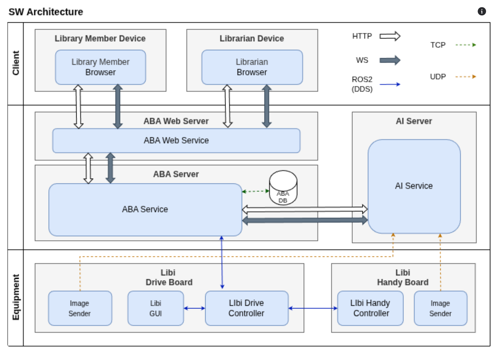
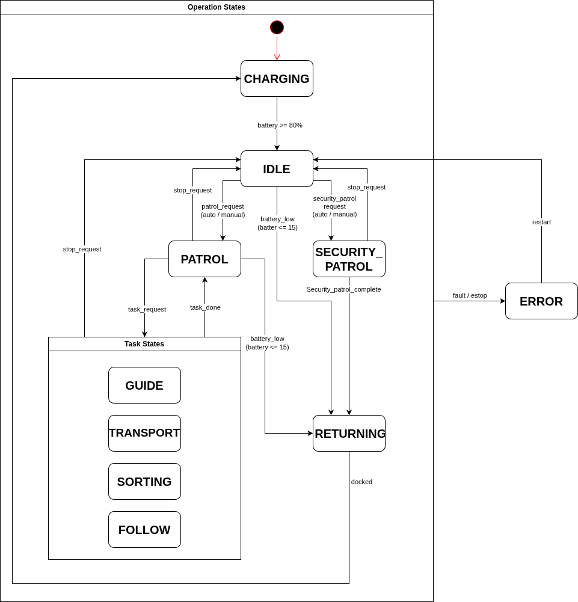
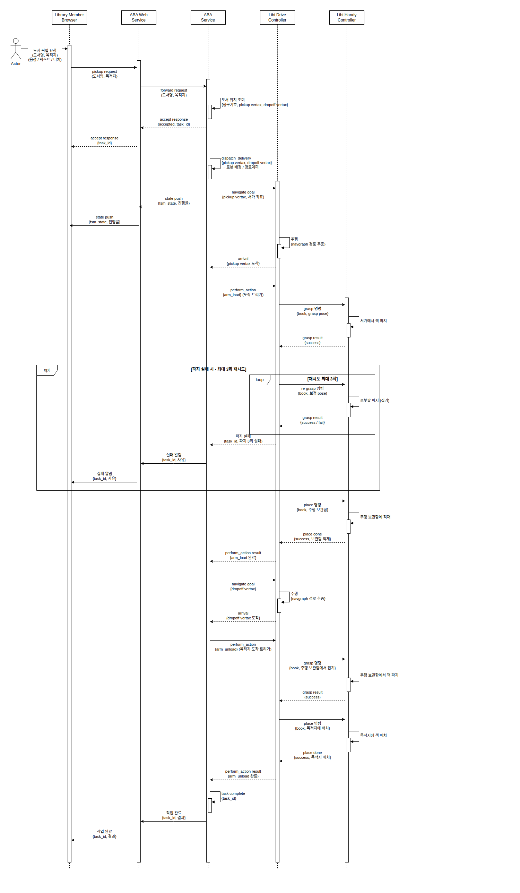
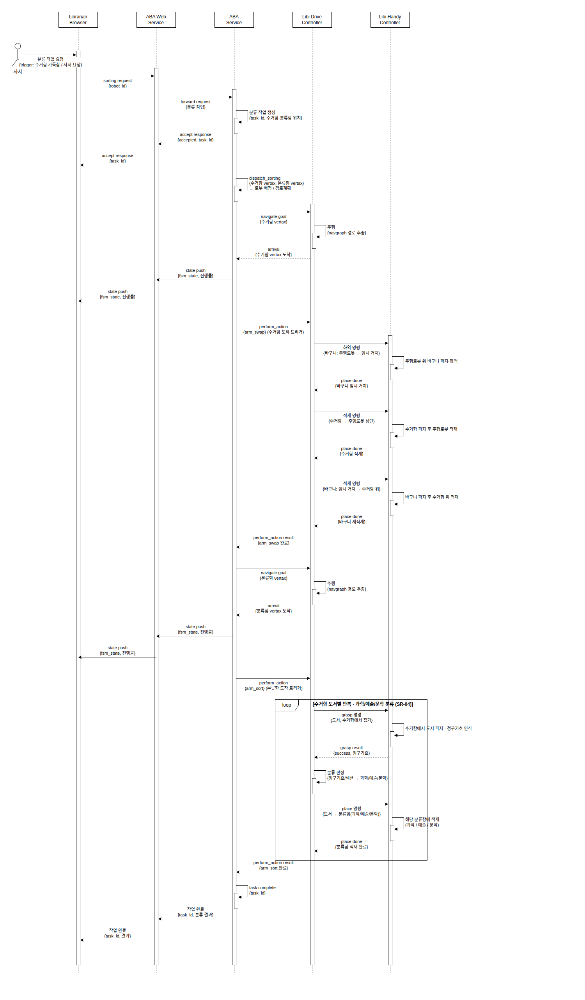
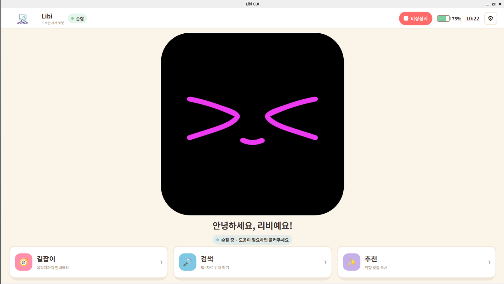

사서를 대체하지 않고 사서의 손과 다리가 되는 협동로봇
주행로봇+로봇팔로 서가에서 책을 직접 집어 이송·분류·진열하고, 이용자를 추종해 짐을 옮기는 사서 협동로봇.
GitHub roscamp-repo-2 · Jira · Confluence (Arte · 78p)




Qt QML + C++ 로봇 터치패널 — 길잡이·검색·추천·표정·비상정지
배차(Greedy+Cost)·교통 충돌 협상 알고리즘 설계, sim slotcar plugin
추종·재탐색 요구사항 정의, 쑈삥끼 추종 파이프라인 기술조사를 적용 예정
15분마다 1대가 전체를 1회 순찰, 침입 감지 시 녹화·관리자 알림
Nav2 파라미터·ArUco 마커·Line tracing (담당 인경일), 여유 시 협업 지원
